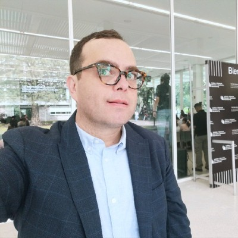

Federated Learning
- Heterogeneity & non-IID data
- Byzantine-robust aggregation
- Personalized & cross-silo FL
- Communication efficiency
- Federated foundation models
MICAI 2026 · Accepted Workshop · BeMoSys
A focused academic forum on operationalizing machine learning at scale: reproducible pipelines, drift monitoring, model governance, and privacy-preserving learning across decentralized data.
Training a high-accuracy model in a controlled setting is only a small part of delivering machine learning that works in the real world. The harder, less-published problems lie in operationalizing ML: reproducible pipelines, continuous training and delivery, monitoring for data and concept drift, governance, and the engineering discipline collectively known as MLOps, and in learning across decentralized, privacy-sensitive data through Federated Learning. These strands meet under the broader umbrella of machine learning systems: how models are built, deployed, maintained, and trusted at scale.
BeMoSys aims to create a focused forum at MICAI 2026 where researchers and practitioners from Mexico, Latin America, and the broader international community can share recent results, exchange engineering experience, and discuss open problems at the intersection of ML systems, Federated Learning, and MLOps. Special attention is given to settings common in the region: heterogeneous data sources, limited infrastructure, regulatory constraints on data sharing, and the need for cost-efficient, maintainable systems.
We invite original research papers, position papers, and experience reports across three thematic axes. Topics include, but are not limited to:
Relation to prior workshops. BeMoSys deliberately unites Federated Learning and MLOps under a single systems-oriented program, and anchors it in the Latin American research context that MICAI serves, an audience under-represented in international editions such as FL@FM (NeurIPS 2023–2024), the FL tracks at ICML and ICLR, MLOps sessions at ICML 2025, and the Deployable AI workshop series at AAAI (2024–2026).
A half-day, four-hour agenda balances peer-reviewed presentations with a hands-on MLOps tutorial and discussion, designed for an intimate, dynamic forum.
| Time | Session |
|---|---|
| 0:00 – 0:15 | Opening and overview by the organizers |
| 0:15 – 1:00 | Invited keynote on ML systems / Federated Learning / MLOps |
| 1:00 – 1:40 | Tutorial I: Hands-on MLOps: pipelines, CI/CD, and reproducibility |
| 1:40 – 2:00 | Break |
| 2:00 – 3:00 | Contributed paper presentations (Session I) and posters |
| 3:00 – 3:30 | Panel / open discussion on open problems and regional deployment |
| 3:30 – 3:55 | Contributed paper presentations (Session II)* |
| 3:55 – 4:00 | Closing remarks |
* The agenda is indicative and will be finalized based on the number of accepted papers. If submissions are limited, Session II will be replaced by a second 40-minute hands-on MLOps tutorial (e.g., model monitoring, drift detection, and deployment).
ITESM Lecturer and ML/AI Engineer @Layer7
PhD in Computer Science (CINVESTAV), specializing in robust and scalable ML systems. Doctoral research on deep learning, federated learning, adversarial robustness, and computer vision, with applications in medical imaging, recipient of Best Paper Awards at MICAI, MICCAI, and CVPR Workshops. ML/AI Engineer at Layer7 leading LLM architectures, multi-agent systems, voice (TTS/STT) pipelines, and large-scale RAG solutions. University lecturer at ITESM and MLflow Ambassador (Databricks), with a strong emphasis on MLOps and reproducibility.
Research Professor, Department of Computing, Tecnológico de Monterrey (Guadalajara)
Member of the Advanced Artificial Intelligence Research Group. MSc in Applied Artificial Intelligence (University of Exeter, UK) and PhD from the University of Oxford (UK). Member of the National System of Researchers (SNI, Level I). Background spans applied AI, embedded software, and the supervision of award-winning graduate ML projects.

Director, PhD Program in Computer Science, Tecnológico de Monterrey (Guadalajara)
Member of the Advanced AI Research Group / CV-inside lab. PhD in Electronic Imaging and Computer Vision (Université de Bourgogne), member of the SNI (Level I), with research in computer vision, endoscopic image analysis, and explainable AI. Reviewer for ICLR, ICML, CVPR, and MICCAI, and chair of the LatinX in Computer Vision workshops at CVPR and ICCV.
Full-time Researcher, Computer Science Department, Tecnológico de Monterrey (Guadalajara)
Researcher specializing in problem solving with stochastic search algorithms applied to computer vision, software engineering, and logistics. PhD in Computer Engineering from the Complutense University of Madrid (metaheuristic algorithms for image segmentation), with a B.Sc. in Computer Engineering and an M.Sc. in Electronics and Computer Science from the University of Guadalajara. Member of the National System of Researchers (SNI, Level I) and the Mexican Society of Computer Science (AMEXCOMP). Has contributed to the design of continuing-education courses for professionals on Generative AI for Software Engineering and on Software Architecture and Testing.
Data Scientist, Wizeline & Lecturer, Tecnológico de Monterrey (ITESM)
Actuary (UNAM) and M.Sc. in Data Science (ITESO) with 14 years of experience in the rigorous application of mathematical algorithms to data problems. Data Scientist at Wizeline and lecturer at Tecnológico de Monterrey (ITESM), including on MLOps and applied AI. Work centers on scalable solutions in business intelligence, data engineering, and predictive modeling, with a focus on recommender engines, knowledge graphs, and MLOps.
The Program Committee brings together expertise across the three thematic axes: federated learning and robustness, MLOps / ML engineering and data governance, and applied ML across industry and medical domains, combining academic and industry profiles. Reviews will follow a double-blind process (target: 2–3 reviews per paper). The full Board of Reviewers is being finalized and will be announced in the official program.
| Member | Affiliation | Area |
|---|---|---|
| Anonymous | Research Professor, Tecnológico de Monterrey | Machine learning, generative AI |
| Anonymous | Adjunct Professor, Tecnológico de Monterrey | ML, statistics, time series, data governance |
| Anonymous | Sr. Data Scientist, DD360; Extension Lecturer, Tec de Monterrey | Applied AI, MLOps, recommender systems |
| Anonymous | Professor, Tecnológico de Monterrey | Software quality, testing, simulation |
| Anonymous | Sr. Expert Data Scientist, BBVA AI Factory; Lecturer, Tec de Monterrey / U. Panamericana | Applied data science, ML in industry |
| Anonymous | Tecnológico de Monterrey / Université de Lorraine | Computer vision, medical imaging |
| Anonymous | Data Scientist, BBVA AI Factory; Lecturer, Tecnológico de Monterrey | Machine learning, AI, databases |
| Anonymous | PhD Candidate, Tecnológico de Monterrey (ITESM) | Machine learning |
Roles and affiliations as currently known; titles to be confirmed for the final program.
The Call for Papers will be distributed through MICAI / SMIA channels, relevant mailing lists (ML-news, FL portal), social media, and the organizers' academic networks across Mexico and Latin America. Submission instructions, deadlines, and the final program will be published on this page once the workshop is confirmed.
For questions about the workshop, please contact the Workshop Chair:
Dr. Iván Reyes Amezcua
ITESM Lecturer and ML/AI Engineer @Layer7
reyes.ivan@tec.mx